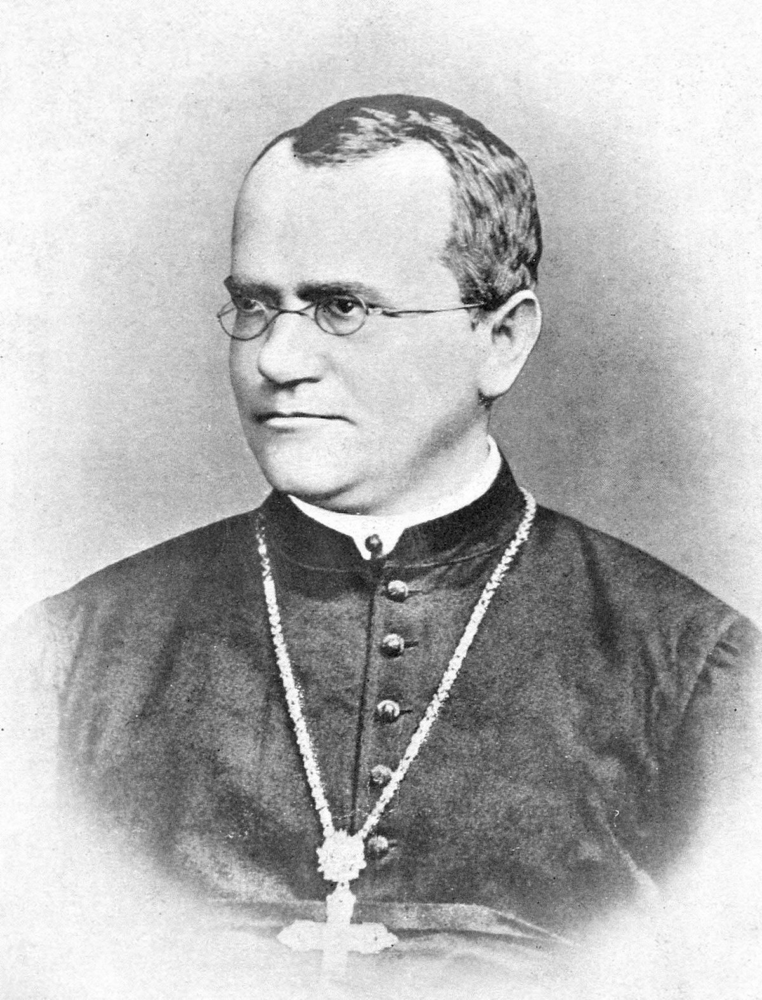

Genetika
Osnovno o genetici
Genetika (engl. genetics), biološka znanost koja istražuje nasljeđivanje i raznolikost genetičke informacije. Istražuje kako se prenose svojstva roditelja na potomstvo, zbog čega nasljedna svojstva kod jedinki istih roditelja variraju, koji faktori određuju ta svojstva, na koji se način svojstva mijenjaju i stječu nova te kako se rezultati tih istraživanja mogu iskoristiti u medicini, stočarstvu, poljoprivredi, farmaceutskoj industriji.
Genetika se bavi molekularnom strukturom i funkcijom gena, ponašanjem gena u kontekstu stanice ili organizma (npr. dominantnost i epigenetika), nasljeđivanjem roditeljskih gena od strane potomaka, kao i rasprostranjenosti gena, varijacijama i promjenama u populaciji. Ako je dato da su geni univerzalni za sve žive organizme, genetika se može smatrati znanošću o svim živim bićima, od virusa i bakterija, preko biljaka (posebno uzgojnih kultura) do ljudi (npr. medicinska genetika).
Činjenica da živa bića nasljeđuju osobine od svojih roditelja već se od pretpovijesti koristila za poboljšavanje uzgojnih kultura i životinja selektivnim razmnožavanjem. Međutim, razvoj današnje genetike, koja pokušava shvatiti proces nasljeđivanja, počeo je djelovanjem Gregora Mendela sredinom 19. stoljeća. Iako on nije poznavao fizičku bazu za nasljeđivanje, Mendel je primijetio da organizmi nasljeđuju osobine preko diskretnih jedinica za nasljeđivanje, koje se danas zovu geni.
Geni odgovaraju područjima u DNK, molekuli koja se sastoji od različitih tipova nukleotida - sekvenca ovih nukleotida je genetička informacija koju organizmi naslijede. DNK se prirodno pojavljuje u obliku dviju spirala, a nukleotidi se nalaze na svakoj spirali i dopunjavaju jedni druge. Svaka spirala može poslužiti za stvaranje još jedne spirale - to je fizička metoda stvaranja kopija nasljednih gena.
Sekvencu nukleotida u genu prevode stanice kako bi stvorile lanac aminokiselina, stvarajući proteine — raspored aminokiselina u proteinu odgovara redu nukleotida u tom genu. Ova veza između sekvence nukleotida i sekvence aminokiselina naziva se genetski kod. Aminokiseline u proteinu određuju kako će se on preklapati u trodimenzionalnom obliku; ta struktura je, pak, odgovorna za funkciju proteina. Proteini izvršavaju gotovo sve funkcije koje su stanicama potrebne za život. Promjena DNK u genu može promijeniti aminokiseline proteina, mijenjajući njegov oblik i funkciju: to može dovesti do dramatičnih efekata u stanici i cijelom organizmu.
Iako genetika igra važnu ulogu u izgledu i ponašanju organizama, ipak kombinacija genetike i onoga što je organizam iskusio daje krajnji rezultat. Na primjer, premda geni igraju važnu ulogu u određivanju visine organizma, njega i ostala stanja kroz koja on prođe nakon početka života također imaju velik utjecaj.
Povijest genetike
1842. – švicarski botaničar Karl von Nageli prvi promatrao kromosome (lijevo je prikazan kariogram čovjeka)
1864.-1865. – Hertwig, von Kolliker, Strasburger, Weismann otkrili da jezgra stanice sadrži genetičku tvar
1865. – utemeljeni Mendelovi zakoni nasljeđivanja
1878. – Flemming otkrio kromosome i proces mitoze
1902. – Boveri i Garrod povezuju kromosome s nasljeđivanjem
1906. – Bateson utemeljio pojam „genetika“
1910. – Morgan povezuje kromosome s nasljednim osobinama
1931. – Barbara McClintock i Harriet Creighton dobivaju prvi eksperimentalni dokaz da se geni nalaze na kromosomima
1941. – Beadle i Tatum pokazuju da geni reguliraju biokemijske reakcije u stanici
1943. – Oswald tvrdi da je DNA materijal od kojeg su građeni geni
1956. – prvi puta promatrana mRNA
1961. – Brenner, Jacob i Meselson potvrdili postojanje mRNA
1973. – prva Međunarodna radionica o mapiranju ljudskih gena
1988. – kloniranje prvog enzima sisavaca
2008. – otkrivena struktura enzima telomeraze
Znanstvenici


Slika 1: Gregor Mendel
Slika 2: Charles Darwin
Slika 3: Thomas Morgan
Slika 4: Rosalind Franklin
Klikom na slike ovih
znanstvenika saznajte nešto
više o njima.